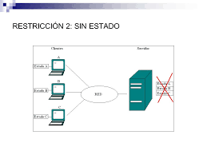
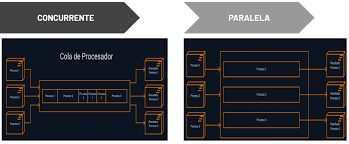

Servidores con estado
Un host con estado es un host que conserva todas las configuraciones y los VIB instalados incluso después de reiniciarlo. Aunque se necesita un servidor de Auto Deploy para implementar los hosts sin estado, ya que los archivos de arranque necesarios para activar un host sin estado se almacenan en el servidor de Auto Deploy, un host con estado no necesita una infraestructura similar. Esto se debe a que los archivos de arranque necesarios para activar un host con estado se almacenan en su disco duro.
Servidores sin estado
 Un proceso o una aplicación sin estado se refiere a los casos en que estos están aislados. No se almacena información sobre las operaciones anteriores ni se hace referencia a ellas. Cada operación se lleva a cabo desde cero, como si fuera la primera vez. Las aplicaciones sin estado proporcionan un servicio o una función y usan servidores de impresión, de red de distribución de contenido (CDN) o web para procesar estas solicitudes a corto plazo.
servidores concurrentes
 Qué pasa cuando varios clientes tratan de conectarse al mismo tiempo a un servidor???? • Una forma es ir atendiéndolos de a uno en un ciclo: como en el programa que atiende pedidos de archivos – Se acepta una conexión – Se lee la petición – Se lee desde el archivo y se escribe en el socket hasta encontrar una marca de fin de archivo • A este tipo de servidores se les llama servidores iterativos • El problema es que todo cliente tiene que esperar su turno para ser atendido • Si uno de ellos pide un archivo muy grande los demás tienen que esperar • La mayor parte de la espera es debido a operaciones de IO, hay capacidad de CPU ociosa !